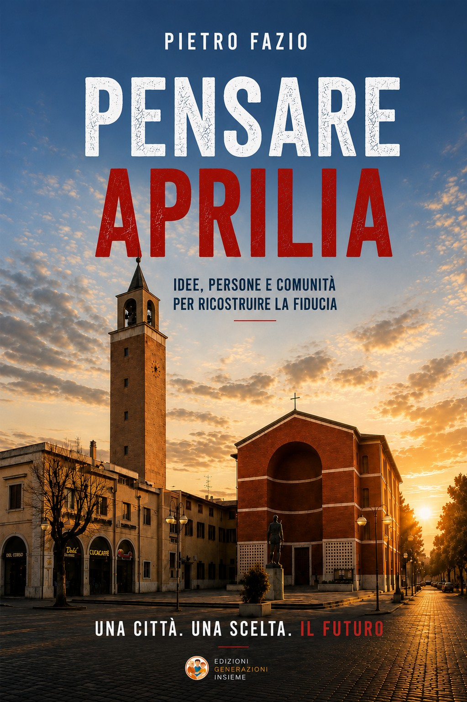

Territorio · Comunità · Visione
Pensare Aprilia
Autore: Pietro Fazio
Un invito a mettere Aprilia al centro della riflessione: ascoltare il territorio, riconoscere il valore della sua comunità e immaginare nuove possibilità per il futuro.
Presentazione editoriale proposta sulla base del titolo e della missione associativa; da verificare con l'autore.
Edizione cartacea · ISBN 979-12-986483-6-4
Trova su Amazon · Edizione cartacea ↗Edizione e-book · ISBN 979-12-986483-4-0
Cerca l’e-book su Amazon ↗Il collegamento cerca l’ISBN su Amazon; verificare la scheda prodotto prima dell’acquisto.